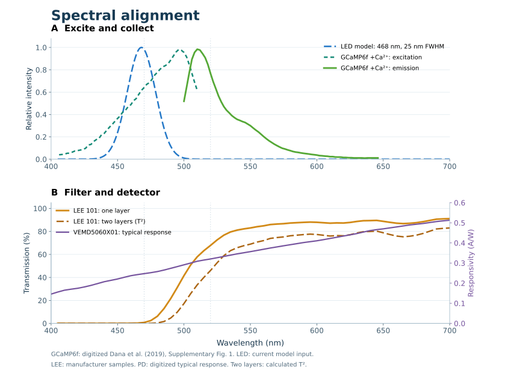
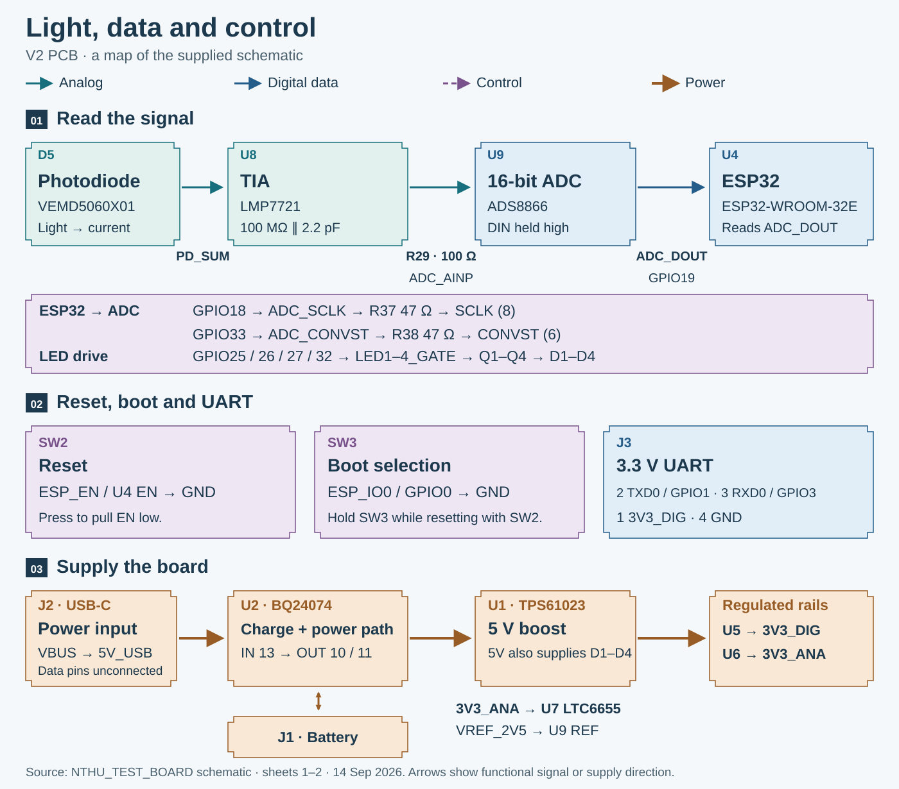
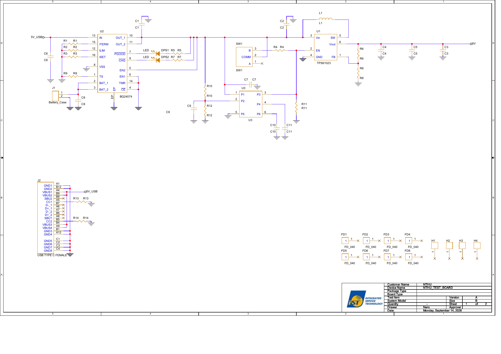

Abstract
AeroSense is designed around four living-cell samples and one optical reader. Optical and transport simulations guide the enclosure and electronics; acquisition software connects the reader to a local phone interface. Follow the product from design decisions to operation and verification.
Operate and export
The implemented local interface supports setup, signal inspection and export in device-direct, private-LAN and demonstration modes. The English screenshots below were captured from the local DEMO server on 11 October 2026.
Connect and identify the data source
Choose the appropriate connection and confirm whether the session is a demonstration or device acquisition. Local operation does not require a public cloud service.
Set a repeatable schedule
Choose the number of blocks, interval, LED duty and active LED condition. Each acquisition block spans two seconds; the stop control turns the LEDs off.
Inspect before correcting
Check raw data and validity flags before applying an independently measured illuminated blank and fluorescence phase reference. Preserve failed records for troubleshooting.
Export the measurement context
Save raw I/Q, corrected values, calibration identifiers and timestamps so that the same decisions can be checked outside the interface.
Keep the raw signal, then correct it
The implemented correction routine is designed to subtract an independently acquired cell-free illuminated blank in complex I/Q space and use a separate fluorescence phase reference. Its export schema retains raw I/Q, unsmoothed corrected values, signed projection, calibration identifiers and timestamps. Host and synthetic tests exercise this path; actual blank and reference measurements have not been acquired. Living-cell F0 is a biological baseline, not a blank. Display averaging and blank subtraction cannot restore clipped samples or remove changing interference.
The implementation preserves raw records and QC flags without automatically applying the simulated mixing matrix. Battery state, cell temperature, gas flow and fan speed are not sensed by this design.
The interface is a delivered software component of the reader design.
Load firmware and the interface
J2 supplies USB-C power. Connect a 3.3 V USB–UART adapter to J3; hold SW3 while resetting with SW2 to select the upload mode. Flash the ESP32 firmware and the LittleFS interface, then connect through the documented local workflow.
Wiring, flashing and setup →Manuals
The released manuals document preparation, assembly, correction and recording. The source index links the files and their provenance.
Read the current developer manual
Step-by-step preparation, assembly, checks and fault handling. The manual uses simplified technical writing principles; no formal ASD-STE100 certification is claimed.
Read operation, calibration and export instructions
The local phone workflow separates demonstration data from measurements. Start with device-direct or private-LAN operation; this package does not deploy a public cloud service.
Preview the complete two-sheet schematic
Power, charging, sensing and control drawings with the recorded component specifications.
Full physical models: assumptions, comparisons, sweeps and reproduction → [16]
Preview the focused validation protocol
Protocol only: no completed bench measurements are claimed. Preserve failures, raw JSON, settings and physical LED mapping.
Reproduce the build and the evidence
Editable CAD · Design parameters · Indexed reproducibility archives · Simulation figures and source index · Firmware and local phone UI
The indexed publication subset groups optics, airflow, transport sensitivity and hardware/software/documents. It excludes private settings, user print-job files and vendor originals. The original models and archive are supporting evidence; the decisive results and limitations remain readable directly on these pages.
Read, inspect and reproduce
Complete English source library · English manuals, forms and BOM ZIP · Executable source and English documentation ZIP.
The source archive includes firmware, software and physical-model scripts with portable inputs. Large cached field arrays, slicer jobs and vendor originals are omitted under the supplied packaging policy. Read each model reproduction guide before rerunning a solver; this is not a claim that every slow solver was rerun during the wiki update.
Keep protocols separate from results
Fluorescence and cell-test protocol · English PDF · Completion plan.
The standard route specifies dye measurements before cell comparisons. The accelerated culture branch is documented separately; an uncalibrated cell record remains uncalibrated regardless of later dye measurements. Repeated readings are technical repeats.
User feedback
Cell survival in our wells
System verification
Follow the evidence from cells to signal acquisition and interpretation. Each record identifies the data source and the layer it tests.
78 software checks
23 host tests, 10 calibration checks, 33 correction checks and 12 UI/API checks exercise the implemented acquisition and export workflow. The recorded DEMO session covers connection, Start/Stop, and JSON/CSV export using synthetic input.
Build and test record ↗ · Reader verification protocol →
Inspect software evidence and the setup guide
Firmware and LittleFS builds are recorded alongside four synthetic model checks and 48 DLIA scenarios. The linked source package provides the reproduction steps. The supplied software evidence
Measured-correction workflow · Software source and reproduction guide · Why synchronous interference remains
Evidence scope
The linked software records use host and synthetic inputs. Biological observations are reported in Results; the hardware package supplies the reader-level verification protocol and recording forms.
Reader measurements
Integrated demonstration
Build resources
Reader design
Four replaceable wells share one gas space and one photodiode. Frequency-tagged LEDs distinguish the excitation channels; the enclosure fixes the positions of the wells, filter and detector.
Heterologous insect-receptor assays and GCaMP6 calcium indicators provide the biological basis for the specified optical readout. [13] [14]
Eight source CAD parts, with PCB and component geometry from the nominal design drawings.
Reader requirements
| Requirement | Design basis | What must be established |
|---|---|---|
| R1 · Four samples | Four separate liquid wells; one shared gas space | Measured well capacity and delivery at the cell plane |
| R2 · Optical readout | Approximately 470 nm excitation / 520 nm emission; shared photodiode | Filter fit and spectrum, concentration response, blank and detection limit |
| R3 · Acquisition | 4 kHz timebase; 2 s I/Q blocks; 41/67/89/113 Hz LED tags | Board timing, clipping margin, signal recovery and crosstalk |
| R4 · Repeatable operation | Replaceable wells and local data export | Leak checks, independent assembly and user-task results |
| R5 · Cost | Development budget | Order-ready filter specification; no verified production cost or fixed cost ceiling |
| Material | Available file / index | Boundary |
|---|---|---|
| PCB | V1 KiCad board · V2 schematic | V1 failed design-rule review; V2 fabrication readiness remains unverified |
| Manufacturing | Engineering archive index | No verified order-ready V2 Gerber package is promoted here |
| Mechanical | Eight operating STL files · Editable OpenSCAD | Nominal geometry; fit, volume and materials need measurement |
| Cost | Itemized BOM workbook | Development budget; filter and supplier gaps remain |
| Software | Firmware / UI reproduction guide | Compiled and host-tested; board not flashed |
| Simulation | Source, parameters and figures | Conditional computation; distinct from measured validation |
| Assembly / correction | Assembly PDF · Correction workflow | Instructions and schemas, not completed trials |
Build cost and unquoted items
USD 2,511.36 (NTD 79,873.79) is the development-device budget snapshot, including the NTD 65,625 allocated PCB development quote and custom-filter allowance. The 11 October English workbook separates device materials, shared developer equipment and optional items across six worksheets with formulas and price sources.
The selected filter is one LEE 101 layer. The archived budget instead retains a NTD 12,000 custom-filter allowance and the older Edmund 67-016 price reference; those entries do not price the selected film.
English BOM workbook · Full price sources and calculation basis · How the budget changes commercial planning →
Full cost calculation · budget, exchange rate and category boundaries
| Category | USD | Basis / boundary |
|---|---|---|
| Required printing | 35.07 | Three print batches; source resin and machine-time formulas |
| Required purchases at used quantity | 412.94 | 13 required purchase lines at used quantity, including the custom-filter allowance |
| Required budget excluding PCB | 448.00 | Required printing + used purchase quantities |
| PCB allocation from this quote | 2,063.35 | Two-board development quote divided by two; design and setup included |
| Required device budget | 2,511.36 | Device development budget; excluded costs remain below |
| Required purchases in whole packs | 512.51 | Whole-pack cash outlay for purchases only, before printing and PCB |
| Developer equipment budget | 1,214.03 | 10 shared development / gas / measurement lines; may be borrowed |
| Future allowance | 235.81 | PDMS, valve development and environmental sensing; excluded |
The workbook uses fixed USD inputs. Its retained 31.805 NTD/USD conversion snapshot is dated 5 October 2026, 15:13; changing that label does not reprice the budget. The source quotation was NTD 131,250 for two boards. Shipping, extra taxes, unlisted labor, reprints, cell-culture consumables and replacement of existing facilities remain excluded. Priced PCB materials (USD 61.44) are not added again to the PCBA quote; one PCB material-price row remains unresolved.
Complete purchase and PCB inventories
Required purchases · 13 lines
| Item / quantity | Used budget (USD) | Specification / purpose | Price basis / unresolved compatibility |
|---|---|---|---|
| F01 · 5 V DC axial fan 1 pc | 5.06 | 40×40×10 mm; mounting pitch 32×32 mm. Design candidate Sunon MF40100V1-1000U-A99:5 V, rated136 mA/0.68 W. Cool the electronics; does not regulate sample gas. Base01 at(-27, -5), bottomZ6/topZ16; airflow from underside toward PCB, two diagonal fixings. | Listed Cradle opening40.6 mm; candidate frame40±0.5 leaves only0.05 mm/side at maximum size before print error. Measure frame/pitch/thickness/wires. Vendor must approve5 V connection and startup-current margin; battery-mode5 V capability is unverified. Never use GPIO or an arbitrary3.3 V rail. |
| H01 · M3×8 screw 4 pc | 0.38 | M3 coarse thread, pitch 0.5 mm; under-head length8 mm. Proposed common head: hex-socket cylindrical, ISO4762/DIN912 type, nominal diameter 5.5/height 3/hex key2.5 mm. Flat bearing face; no countersunk or self-tapping screw. Head choice is a procurement proposal, not a tested fit. Retain PCB Four PCB corners(±45, ±40), inserted from optical side. | Allowance With0.5 mm washer, nominal under-headZ40.1/tipZ32.1; nut pocketZ33.5–36.2. Verify actual PCB hole, copper keep-out and head clearance. No validated tightening torque for the resin; screw material/finish remain to be specified. |
| H02 · M3×16 screw 2 pc | 0.25 | M3 coarse thread, pitch 0.5 mm; under-head length16 mm. Proposed common head: hex-socket cylindrical, ISO4762/DIN912 type, nominal diameter 5.5/height 3/hex key2.5 mm. Flat bearing face; no countersunk or self-tapping screw. Head choice is a procurement proposal, not a tested fit. Retain fan From fan top at diagonal(-43, -21), (-11, 11). | Allowance For nominal10 mm fan plus0.5 mm washer, under-headZ16.5/tipZ0.5; nut pocketZ0.3–3. Confirm real tolerances: tip must remain above foot planeZ0 and engage the nut. No validated tightening torque for the resin; screw material/finish remain to be specified. |
| H03 · M3×35 screw 2 pc | 0.38 | M3 coarse thread, pitch 0.5 mm; under-head length35 mm. Proposed common head: hex-socket cylindrical, ISO4762/DIN912 type, nominal diameter 5.5/height 3/hex key2.5 mm. Flat bearing face; no countersunk or self-tapping screw. Head choice is a procurement proposal, not a tested fit. Clamp base, hood and removable lid Down through lid at(-30, -51.8), (30, 47.8) into base nuts. | Allowance Existing stack without extra washer: under-headZ66/tipZ31; nut pocketZ33.2–35.9. Head projects beyond66-mm body height. Verify supplier thread length and physical stop; do not over-tighten to force sealing. No validated tightening torque for the resin; screw material/finish remain to be specified. |
| H04 · M3 hex nut 8 pc | 0.50 | M3×0.5; regular hex nut, 5.5 mm across flats, 2.4 mm high, DIN934/~ISO4032 dimensions; not a tall locknut. Mate with the three screw lengths:4 PCB+2 fan+2 enclosure. Integral base pockets; PCB/enclosure nuts enter side slots, fan nuts from underside. | Allowance CAD hex circumradius3.3 gives5.716 mm across flats; pocket height 2.7. Relative to5.5×2.4 nut, total width allowance0.216 and height 0.3 mm; test printed pockets. Match material/finish to screws; do not force or substitute self-tapping. |
| H05 · M3 flat washer 6 pc | 0.19 | Nominal ID3.2, OD7.0, thickness 0.5 mm; flat form, 6 pieces. M3 does not mean an exact3.0-mm bore. Spread head bearing load; 4 PCB+2 fan. Under each M3×8 and M3×16 head; none additionally counted for M3×35. | Allowance OD7 mm is a procurement reference; PCB copper keep-out remains unverified. Metal must not touch exposed copper. Conductive versus insulating material requires vendor approval; insulating washers also need creep/thickness checks. A thicker substitute changes the screw stack. |
| E01 · Wire, insulating sleeve and retention supplies 1 set | 2.52 | One set:5 V/GND wiring, joint insulation and wire retention; cut length to routing. Wire gauge, connector, insulation rating and retention method require supplier approval; no fan socket is verified. Supply fan and prevent strain, shorts and blade contact. Along base perimeter, clear of fan rotor, PCB pillars and ESP32 antenna. | Allowance Use only vendor-approved5 V/GND. A TPS61023 boost architecture is drawn, but missing passives/current margin prevent a battery-mode5 V claim. Do not connect to GPIO/arbitrary3.3 V. No added boost module is specified. |
| S01 · 0.8 mm opaque silicone sheet 1 sheet | 4.72 | One sheet for3 pieces: lower20×18 with four4×2.8 openings at(±3.3, ±2.65); upper ring18.4×15.6 outside/14.8×12 inside; PD ring4×4 outside/3×3.4 inside. Stock0.8 compressed nominally to0.6 mm(25%); sheet area must include all cuts plus trimming allowance. Seal well mouths and cap; block light around PD. LowerZ55.5–56.1; upperZ57.3–57.9; PD ringZ40.5–41.1 after nominal compression. | Allowance Hardness, compression set, thickness tolerance, VOC sorption/permeation, cleaning and cell-environment compatibility remain unqualified. PD ring minimum wall 0.3 mm and tiny aperture alignment margin require the100% SVG and real PD window. Black appearance does not prove opacity or gas sealing. |
| E02 · USB-C external supply 1 set | 8.74 | Vendor-confirmed USB-C approximately 5 V input; price proxy is 5.1 V 3 A with cable. Battery excluded. Power PCB; battery operation first requires approved charging/protection settings. USB-C to J2; battery to J1 Battery_Case according to physical holder/polarity. | Proxy J1 connects BAT/GND, but holder dimensions/polarity and charge-setting R1–R3/TS R9 values are missing. Do not specify18650 chemistry/protection from photographs. TPS61023 output is labeled5 V but R6/R8 and other values are absent; vendor must confirm power and fan capability in both modes. |
| G01 · 0.2 µm hydrophobic gas filter 2 pc | 1.90 | Two, one inlet and one outlet; gas-rated hydrophobic medium, 0.2 µm pore size. Membrane, area, housing, fittings and MPN undecided; a liquid syringe-filter label does not establish gas suitability. Reduce inlet/outlet particulate transport; not whole-device sterility certification. Inlet filter between sample and inlet; outlet filter between outlet and downstream pump. | Proxy Obtain air pressure drop near3 mL/min, direction, pressure limits, wetting behavior, fittings and cleaning/sterilization information; measure target-VOC recovery/lag. Pore size does not prove zero VOC sorption or absolute containment. Price proxy ANP1322 is 0.22 um and nonsterile; it is not a qualified replacement for the specified 0.2 um gas filter. |
| G02 · PTFE gas tubing 1 m | 6.29 | Candidate ID2.0/OD3.0 mm; procurement basis1 m. Cut shortest practical lengths and connect through G03. Connect sample, filters and device while limiting unnecessary dead volume. External gas path near side slots; do not force directly onto printed tails. | Allowance Verify wall/bend radius, tolerances and VOC recovery.1 m of ID2-mm tubing holds about3.14 mL; at3 mL/min nominal residence alone is about63 s. Chamber ~50-s t90 is not complete-system response time. |
| G03 · Soft-tube couplings and fitting adapters 1 set | 4.72 | One set covering at least two printed-tail joints and required filter/PTFE adapters. Printed tail OD3.4, ridge4.0, bore2.4 mm; PTFE OD3.0. Final soft-tube ID/OD, material, length and fittings await filter selection and off-board fit tests; no claimed matched MPN. Make removable joints between rigid PTFE/filters and fragile printed tails. Lid-X inlet/+X outlet, Y0/Z60.8, routed through hood side slots. | Allowance Coupling must pass4-mm ridge without splitting nominal0.5-mm printed wall. Tip-to-rib insertion length is about4.8 mm, not the full10-mm tail. Side slot height 7 mm also limits OD/bend. Off-board test retention, leaks, VOC sorption and unrestricted outlet. |
| O01 · Fluorescence emission filter 1 pc | 377.30 | One piece, mechanical maximum5.2×4.2×1.0 mm; pocket5.4×4.4, clear aperture4.8×3.8 mm. Cover optical path without edge bypass. Supplier brief:LED peak~468/model470 nm and target GCaMP/fluorescein green~520 nm; request spectral transmission/blocking and angle curves. Reject synchronous excitation leakage while passing green fluorescence. Central filter seat in hood02, bottomZ41.1, above PD. | Custom allowance No selected MPN. Model OD3/4/5 at470/520 nm and0.9 normal green transmission are design-study assumptions, not verified purchased performance. Collection includes large angles; obtain0–65° and higher-angle data/limits. Interference-filter spectral shift is not represented by the absorptive proxy. Verify edge coating, orientation, flatness, thickness and PD-seal fit. |
Developer purchases · 10 lines
| Item / quantity | Used budget (USD) | Specification / purpose | Price basis / unresolved compatibility |
|---|---|---|---|
| P01 · 3.3 V logic USB–UART adapter 1 pc | 5.95 | One shared adapter; TX/RX/GND with3.3 V logic, not RS-232. Computer driver/upload-rate support required; MPN and J3-compatible cable terminals undecided. Program ESP32 and read serial diagnostics. Connect to J3; adapterTX to boardRX, RX to TX, common ground; normal board power through J2. | Listed Confirm physical J3 pin1 and terminal pitch. Leave adapterVCC disconnected with normal board power. J2 has no USB–UART bridge; never apply5 V UART signalling to ESP32. |
| L01 · Suction,flow and pressure equipment 1 set | 157.21 | One shared/borrowed set:one controllable downstream suction source, gas flowmeter resolving~3 mL/min, pressure monitoring and independent limiting. Range, resolution, calibration, MPN and pressure limit remain undecided; no second independently set push pump. Provide measured shared sample flow. Suction downstream of outlet filter, with lab-approved exhaust. | Allowance 3 mL/min is a conditional fixed-CAD candidate, not a cell-safety limit. Measure assembled system; steady inlet/outlet volume rates match at common temperature/pressure. Chamber CFD excludes filters/tubing. Do not expose wells directly to pump maximum suction; baffle is not pressure regulation. |
| L02 · Measurement and assembly hand tools 1 set | 47.16 | Calipers, 2.5 mm hex key, tweezers and craft knife; one set, borrow first. Postprocess, measure and assemble. Workbench; supplies/tools are not product-installed parts. | Allowance Use resin-validated settings, no universal exposure/torque claim. Must measure/clean0.8-mm gaskets, 0.5-mm well floors and small bores. Existing equipment is declared as owned/borrowed rather than free. |
| L03 · Sodium fluorescein 1 set | 52.60 | 46970, market price per 100 g bottle. Prefer a documented stock aliquot for small tests. No electrical meter included. Run cell-free optical, mixing, concentration and electrical checks before cell work. Validation bench/existing laboratory. | Listed Record stock concentration, solvent/pH and lot per validation guide. Instrument bandwidth/calibration/probe points require confirmation. A fluorescence standard does not establish GCaMP sensitivity, gas t90 or odor recognition. |
| P02 · USB data cable and UART leads 1 set | 4.72 | One adapter-compatible data cable and three J3-compatible signal leads. Connect computer to P01 and J3. External shared equipment | Allowance Budget is not a confirmed compatible-part quotation. Borrow first; confirm model before purchase. |
| L04 · Low-flow gas meter 1 set | 471.62 | Calibrated measurement near 3 mL/min; a 10 mL/min lower range is unsuitable. Measure complete-path flow; excluded from L01. External shared equipment | Allowance Budget is not a confirmed compatible-part quotation. Borrow first; confirm model before purchase. |
| L05 · Digital multimeter 1 set | 25.15 | DC voltage, resistance and continuity; insulated probes for low-voltage PCB work. Check rails and connections. External shared equipment | Allowance Budget is not a confirmed compatible-part quotation. Borrow first; confirm model before purchase. |
| L06 · Oscilloscope 1 set | 314.42 | At least two channels with probes compatible with 3.3 V logic; borrow lab equipment. Check LED PWM, CONVST and timing. External shared equipment | Allowance Budget is not a confirmed compatible-part quotation. Borrow first; confirm model before purchase. |
| L07 · Micropipette and tips 1 set | 125.77 | Calibrated range covering 80 uL, with one box of compatible tips. Control well fill volume. External shared equipment | Allowance Budget is not a confirmed compatible-part quotation. Borrow first; confirm model before purchase. |
| L08 · Cleaning and post-cure consumables 1 set | 9.43 | Small supplies of resin-approved cleaner, gloves and lint-free wipes; existing printer and cure equipment reused. Print finishing; cell-culture consumables excluded. External shared equipment | Allowance Budget is not a confirmed compatible-part quotation. Borrow first; confirm model before purchase. |
Optional budget items · 3 lines
| Item / quantity | Used budget (USD) | Specification / purpose | Price basis / unresolved compatibility |
|---|---|---|---|
| FUT01 · PDMS membrane research materials 1 set | 188.65 | SYLGARD 184 0.5 kg kit and basic casting supplies; thickness and ratio require experiments. Future VOC transport and selectivity research; not current assembly. Not integrated | Allowance Budget is not a confirmed compatible-part quotation. Borrow first; confirm model before purchase. |
| FUT02 · Gas valve and driver materials 1 set | 15.72 | 6 V FA0520E price reference; allowance includes driver, flyback diode, supply and adapters. Future gas switching; current UI and PCB do not support it. Not integrated | Allowance Budget is not a confirmed compatible-part quotation. Borrow first; confirm model before purchase. |
| FUT03 · Environment sensing development materials 1 set | 31.44 | Temperature/humidity module and wiring allowance; excludes heater, CO2 control and incubator. Future environmental monitoring; not cell-environment control. Not integrated | Allowance Budget is not a confirmed compatible-part quotation. Borrow first; confirm model before purchase. |
Further reading: [15]
Released verification protocol
The released protocol defines board checks, fluorescence standards, gas/liquid geometry checks and an assembly record. The linked blank forms accompany this specification.
| Gate | Specified record |
|---|---|
| 1 · Electrical bring-up | Rails, power sequencing, board mapping and safe ADC range |
| 2 · Dark noise | LED-off recordings with acquisition settings |
| 3 · Excitation leakage | Cell-free illuminated blanks; spectral leakage |
| 4 · Standard calibration | Known fluorescein concentration response and repeatability |
| 5 · FDM recovery | Known single-well conditions recovered at each modulation frequency |
| 6 · Crosstalk | Measured four-by-four transfer matrix |
| 7 · DLIA improvement | Matched raw / demodulated SNR under controlled interference |
| 8 · Biological fluorescence | Controlled cell response and a same-sample reference measurement |
| 9 · Battery stability | Acquisition stability over a documented discharge / power condition |
| 10 · User workflow | Task completion, observed errors, design changes and retest |
The nine-condition fluorescein specification covers gates 3–6 and part of the correction sequence in the engineering ladder. Read the original engineering ladder.
Standard-sequence specification
Protocol specification. The table defines the standard sequence and recorded quantities; it contains no bench measurements.
After unpowered fit and leak checks, confirm electrical rails, ADC headroom, DARK acquisition, stop control and observed D1–D4 mapping. Then use a traceable sodium-fluorescein standard: illuminated blank B_CAL → independent B_CHECK → four single-well C conditions → all wells at 0.5C → all wells at C → repeat 0.5C. These are nine illuminated analytical conditions, each with at least five distinct valid two-second technical blocks; DARK is saved separately.
The protocol specifies a 50/100 nM pilot and records fill, medium/pH, LED duty and filter. Its approximately five-second record spacing can miss fast GCaMP6f peaks; dye measurements and cell assays address different signals.
Concentration response, a 4 × 4 single-well matrix and held-out blank before/after correction. The analysis rejects DEMO, duplicate or incompatible records.
The manual-evaluation specification covers 2–3 non-designers and records completion, time, assistance, orientation and seal errors.
The protocol separates reader function, gas-to-cell delivery, material compatibility, odor classification and user adoption as distinct endpoints.
The specification allocates 60–120 minutes to the standard sequence, excluding assembly, flashing and troubleshooting. Its five blocks are technical repeats. Protocol design and reuse context: Engineering Entrepreneurship
The linked records document safety, the engineering specification and the model-to-design decisions. Safety & Security the completion plan the model-to-build decision table
A documented measurement chain
The hardware package defines sample position, illumination, collection, amplification, digitization and correction as an inspectable measurement chain. The delivered evidence is its circuit and enclosure design, computational comparisons and tested software.
User testing and performance records
The downloadable performance ledger is a blank recording template for electronics, LED mapping, standards, fit, reassembly, water/flow and manual feedback.
| Record | What it captures | Current status |
|---|---|---|
| Electronics · LED mapping | Electrical checks, actual channel identity and acquisition conditions | No measured records |
| Optical standards | Independent blanks, single-well standards, correction and repeat readings | No measured records |
| Fit checks · Reassembly · Water and flow | Mechanical compatibility, repeated assembly and liquid/gas-path checks | No measured records |
| Manual tasks · Ratings · Revisions | Observed assembly difficulties, participant feedback and changes to retest | No participant results |
Current result ledger · Hardware evidence matrix
Preview the assembly and operation feedback form
The blank task-based form records participants, observed problems, revisions and repeat outcomes.
Data availability
The BOM and assembly document library link the published bill of materials, drawings, assembly documents and their readable previews. Editable CAD, design parameters, software documentation and reproducibility archives are available as separate source records. The detailed physical methods, numerical checks and simulation outputs are on Model. No raw instrument calibration or integrated cellular-response dataset is supplied as a hardware-performance result here; the validation section states the measurements still required.
Collect fluorescence
Wells and light paths
Four removable clear wells sit in a black printed carrier. Their flat floors, fixed spacing and open lower optical band connect the cell samples to the LEDs and central photodiode.
Excitation: the four sideview LEDs illuminate the samples through the lower optical band. Collection: green fluorescence passes through the clear well floors and the receiver filter to the photodiode. The filter covers the collection aperture while all four excitation paths remain open.

| Optical part | Nominal CAD dimensions | Role in the light path |
|---|---|---|
| Clear wells · Aqua Clear Plus | 4 × 2.8 mm interior; 5 × 3.8 mm exterior; 0.5 mm flat floor | Hold four separate samples and provide a transparent collection surface. |
| Black hood and carrier · PC/GF-like Black | 20 × 18 mm carrier; 5.3 × 4.1 mm slots; minimum shared wall 1.2 mm | Fix well spacing and shield the upper sidewalls, while keeping the lower optical band open. |
| Filter seat and detector seal | Seat up to 5.2 × 4.2 × 1.0 mm; seal aperture 3 × 3.4 mm | Place the receiver filter over the photodiode and close paths around its edges. |
| Registration | Well pitch 6.6 × 5.3 mm; photodiode active-area offset (0, −0.4) mm | Preserve the well, LED and detector relationship during assembly. |
The dimensions and material names are the current build specifications. CAD parameters · Filter and well assembly instructions · Inspect the eight-part geometry ↗
Well illumination
The well simulation predicts unequal collection and mixing between wells: the intended well contributes 88.6–90.9% of the modeled green signal in each LED channel. This supports fixed well positions and separate calibration for each well.
Well collection and mixing model → · Watch the NE-well optical-path simulation →
Match the spectra
The optical chain needs both excitation and separation: blue light excites GCaMP6f, while the receiver filter passes green fluorescence to a photodiode that responds to both colors. The spectra connect the biological reporter to the filter and detector choices. [14]

Open full-size spectra ↗ · Download PNG · Plot data · Source and digitization record · Reproduce the plot

This overlay adds the published GCaMP6f spectrum. The filter comparison below retains its original proxy-green input, so its reported current ratios remain traceable to the saved simulation.
Filter excitation leakage
The selected build uses a single LEE 101 layer across the photodiode collection aperture. Keep the LED-to-sample path open. The aim is to reduce excitation leakage before the current reaches the receiver, while preserving useful green fluorescence.
Against the same unfiltered modeled input, the selected layer retains 2.987% of LED-derived current and 70.43% of proxy-green current. The raw peak falls from 104.36 to 4.09 nA in this synthetic record. Filter comparison shows the two conditions used for this design decision.

Fix the optical alignment
Locate the single layer at the collection aperture and retain the registered wells and photodiode orientation. Check actual film thickness, aperture coverage, clamping and light seals before assembly. A selected material is not a verified fit.
Calibrate the four wells separately
The geometry model predicts unequal collection and nonzero well mixing. The readout design therefore retains raw complex I/Q and separate illuminated-blank and source-well calibration records.
The calculation uses published LEE transmission, while spatial photometry supports fixed registration. The full assumptions and comparisons are documented in Model. [12] [11]
Geometry, illumination maps and well mixing → Spectra, alternative filters and noise analysis →
Deliver the sample
Guide gas above the wells
The chosen gas lid contains an integral shelf, retaining the eight-part enclosure. The shelf redirects the incoming gas before it reaches the shared well space; it requires no additional printed component.
Against the open lid, the selected shelf reduces the modeled downward-momentum proxy by 36.1% and near-liquid P95 gas speed by 20.1% at the finest tested grid. Airflow comparison shows this final two-condition comparison. The reduction is not grid independent, and gas-circulation flux becomes less even across wells. This supports a design to test, not a cell-safety claim.

The nominal geometry model identifies 3 mL/min as a sampled operating candidate, with worst near-liquid gas t90 of about 50 seconds. The gas-path specification uses a regulated downstream pump; the cooling fan and phone interface do not regulate sample flow.
Flow methods, alternatives, operating sweep and numerical checks →
Separate gas arrival from cell exposure
No PDMS film is required in the selected enclosure or required-parts list. The useful design result is that gas arrival and delivery through the liquid are separate steps. Adding a film before establishing the no-film baseline would add another unknown delay.
The liquid path can dominate
For the model’s nominal 8.929 mm stagnant liquid layer and assumed diffusivity of 10−9 m²/s, ideal surface-step delivery gives a bottom t90 of 22.83 hours. This conditional transport example is not a receptor-response time or a prediction for the provisional 80 µL fill.
Measure at the cell plane
Measure no-film arrival and recovery with a defined target molecule and the verified geometry. Only then assess whether a characterized membrane improves selectivity without unacceptable delay, loss or carryover.
The selected enclosure keeps the gas lid removable and the wells accessible; it contains no PDMS film.
Transport equations, membrane sweep and sensitivity limits →
Read the signal
Signal and control

Photodiode → TIA → ADC → ESP32
Four independently driven LEDs and one shared photodiode reduce the number of detector channels while preserving a route to frequency-resolved readout. This choice places the burden on stable acquisition and measured optical calibration.
The acquisition specification uses a 4 kHz timebase, two-second I/Q blocks and 41/67/89/113 Hz LED channels.
The acquisition retains in-phase and quadrature components at each excitation frequency, following Scofield’s frequency-domain treatment of lock-in detection. [1]

Circuit details · component functions, pins and schematic
The power path uses TPS61023 boost conversion [2] and BQ24074 charging [3]. ESP32-WROOM-32E coordinates acquisition [4]. LP5907 and LTC6655 provide regulation and a 2.5 V reference [5] [6]; an LMP7721 TIA and ADS8866 16-bit SAR ADC form the analog readout [7] [8]. Four Würth blue LEDs and a VEMD5060X01 photodiode provide the optical path [9] [10].
Firmware assigns LED gates to GPIO 25/26/27/32 and ADC CONVST/SCLK/DOUT to 33/18/19. Its 4 kHz timebase specifies 8,000 samples per two-second I/Q block at 41/67/89/113 Hz. The firmware configuration retains BOARD_VALIDATED=false.

What the first board changed
The first PCB combined the LED drivers, detector front end, ADC, reference, ESP32 and a Raspberry Pi interface. Its archived 2 August design audit recorded 73 DRC violations, four unconnected items, seven ERC errors and eleven ERC warnings. Clearance and solder-mask issues, incomplete connections and library inconsistencies made the board unsuitable for fabrication. We used that audit to define a professional schematic and layout review before proceeding to V2.
The 11 September layout revision shortened and guarded the high-impedance path, corrected the ADS8866 symbol and interface, separated analog and digital supply requirements, and removed the Raspberry Pi interface. Iteration history: Engineering
Component calculations
The selected values determine excitation current, photocurrent gain, reference accuracy and sample timing. Each calculation below links a schematic value to its role in the reader. Source schematic ↗ · Firmware source ↗
| Stage | Source values | Calculation | Design meaning |
|---|---|---|---|
| Photocurrent → voltage | R27 = 100 MΩ; C21 = 2.2 pF | Vout ≈ Iphoto × 100 MΩ fp = 1/(2π × 100 MΩ × 2.2 pF) = 723.43 Hz | The nominal feedback gain is 100 mV per nA. At the four excitation frequencies, its amplitude is 99.84%, 99.57%, 99.25% and 98.80% of DC gain. The photodiode polarity gives a positive output. No additional voltage-gain stage appears in the schematic.[7] |
| Voltage → digital code | U7 = 2.5 V; U9 = 16 bit | 2.5/2¹⁶ = 38.147 µV/code 38.147 µV/100 MΩ = 0.38147 pA/code | These are ideal code scales. The reference span corresponds to 25 nA; usable signal range also depends on baseline, amplifier headroom and offsets. The LTC6655 B-grade reference specifies ±0.025% initial accuracy, equivalent to ±625 µV at 2.5 V.[8] [6] |
| Sampling and modulation | Fs = 4000 Hz; N = 8000 | Ts = 250 µs; N/Fs = 2 s 16 bits/2 MHz = 8 µs; 10 + 8 = 18 µs | The ADS8866 supports 100 kSPS; this firmware configures 4 kSPS. A 10 µs conversion wait exceeds the specified 8.8 µs maximum, followed by an 8 µs nominal SPI transfer plus software overhead. The 41/67/89/113 Hz channels complete 82/134/178/226 cycles per block, enabling coherent sine/cosine estimation.[8] |
| Excitation current | R16/R21/R24/R30 = 100 Ω | I ≈ (5−3.4)/100 = 16 mA PR ≈ 0.016² × 100 = 25.6 mW | This estimate uses the LED’s typical 3.4 V forward drop at its 20 mA datasheet test point. Default 25% duty gives approximately 4 mA average per channel and 6.4 mW average resistor dissipation. Actual current follows the LED I–V curve, rail voltage and tolerances.[9] [17] |
The input interface and supply filters serve different purposes. C24 spans both ADC inputs, so R29 + R36 = 200 Ω gives a nominal 795.8 kHz differential pole. R34 is in series with shunt C28, while REF is fed directly. Neither network is a 2 kHz anti-alias filter. The 723 Hz TIA feedback pole attenuates higher frequencies, but unwanted light, switching transients and harmonics still require an aliasing and settling check. [8]
Full selection audit · 61 BOM rows
The audit maps all 104 reference designators to 28 functional groups. Values printed on sheet 2 are calculated below. Sheet 1 leaves C1–C11, R1–R14 and L1 values blank and does not identify U3; those entries show the applicable selection equation or manufacturer requirement instead of an invented value.
| Function and references | Nominal value | Equation and substitution | Selection basis and source |
|---|---|---|---|
| TIA feedback R27, C21 | 100 MΩ; 2.2 pF | Zf=Rf/(1+j2πfRfCf); τ=100 MΩ×2.2 pF=220 µs; fp=723.43 Hz. Gain magnitude at 41/67/89/113 Hz: 99.84/99.57/99.25/98.80 MΩ. | Rf sets current-to-voltage scale; Cf limits feedback impedance at high frequency. At 300 K, Rf alone contributes √(4kT/Rf)=12.87 fA/√Hz; ideal one-pole integrated output noise is 43.39 µV RMS. This is one noise term, not detection limit. Schematic sheet 2, TIA; LMP7721 Rev. E pp. 17–19, 22–24 [7] |
| Photocurrent and input stability D5, U8 | VEMD5060X01; LMP7721 | Cd≈80 pF at zero bias; amplifier input≈11 pF; Cin≈91 pF+layout. Noise gain NG(s)=1+sRfCin/(1+sRfCf), approaching 1+Cin/Cf≈42.4 before layout capacitance. | D5 cathode connects to IN− and anode to ground, giving positive output for photocurrent leaving the summing node. LMP7721 has 3 fA typical bias at specified test conditions. Phase margin requires its open-loop response and actual parasitics; the 723 Hz feedback pole alone does not prove stability. Schematic sheet 2; VEMD5060X01 Rev. 1.2 p. 2; LMP7721 Rev. E pp. 6–7, 18–19 [10] [7] |
| ADC differential input network R29, R36, C24 | 100 Ω + 100 Ω; 1000 pF | Rdiff=R29+R36=200 Ω; τ=200 Ω×1 nF=0.200 µs; fp=795.8 kHz (unloaded differential model). | C24 spans AINP and AINN. Both series resistances enter the differential calculation. The network isolates sampling charge; it is not a 2 kHz anti-alias filter. U8 directly drives it; no separate voltage-gain stage is shown. Schematic sheet 2, TIA and ADC; ADS8866 Rev. C analog-input and input-driver sections [8] |
| Digitization U9 | ADS8866IDGS | LSB=2.5 V/65536=38.147 µV; DC current/code=LSB/100 MΩ=0.38147 pA; ideal span=2.5 V/100 MΩ=25 nA. | 16-bit, 100 kSPS device; the firmware selects 4 kSPS. Actual headroom uses U8 output limits, offsets and total DC photocurrent. Resolution is not accuracy, sensitivity or usable rail-to-rail range. Schematic sheet 2; ADS8866 Rev. C pp. 5–9, 18–20; firmware main.cpp [8] |
| Excitation current R16, R21, R24, R30, D1, D2, D3, D4 | 100 Ω each; 155124BS73200 | I≈(5−Vf−VDS)/100 Ω. Using Vf=3.4 V at the manufacturer’s 20 mA test point and neglecting VDS gives 16 mA; resistor power≈25.6 mW on, 6.4 mW at 25% duty. | This is an operating-point estimate: Vf changes with current and temperature. Datasheet Vf maximum 3.8 V is specified at 20 mA; no minimum is given, so it does not establish a complete current range. Use actual rail, LED I–V curve and resistor tolerance for limits. Schematic sheet 2, LEDs; Würth 155124BS73200 electrical/optical table p. 2; firmware duty=25 [9] |
| LED switching R17, R22, R25, R32, R20, R23, R26, R33, Q1, Q2, Q3, Q4 | 220 Ω gates; 100 kΩ pulldowns; AO3400A | Vgate≈3.3×100000/(100000+220)=3.293 V; initial ideal gate current≤3.3/220=15 mA; pulldown current≈32.9 µA. With Ciss=630 pF, 220 Ω×Ciss≈0.139 µs is a small-signal estimate. | 220 Ω limits edge current; 100 kΩ holds the gate low when GPIO is undriven. AO3400A specifies RDS(on)≤48 mΩ at VGS=2.5 V, ID=3 A, 25°C. Threshold voltage alone is not an on-state specification; GPIO impedance and Miller charge alter switching time. Schematic sheet 2; AO3400A Rev. 3.1 p. 2 [17] |
| LED supply reservoir C12 | 47 µF | ΔV≈ΣIΔt/C. Example: four 16 mA channels for 100 µs without replenishment give 0.064×100 µs/47 µF≈0.136 V. | A local transient reservoir, not storage for an entire LED pulse. Actual droop depends on the boost source, ESR and wiring. Schematic sheet 2, “Place near by LEDs”; charge balance Q=CΔV |
| TIA supply filter R31, C25, C26 | 100 Ω; 0.1 µF + 100 µF | τ=100×100.1 µF=10.01 ms; fp≈15.90 Hz. DC drop=100 Ω×IU8; 1.1 mA gives 0.11 V. | This pole belongs to the supply, not the photometry signal. 1.1 mA is LMP7721 typical quiescent current at 2.5 V; exact 3.3 V board drop includes load current and component variation. Schematic sheet 2, TIA; LMP7721 Rev. E p. 7, p. 25 [7] |
| ADC rail decoupling C27, C29 | 1 µF each | C27: DVDD to ground; C29: AVDD to ground. Local transient relation ΔV≈IΔt/C; no numerical droop without current and impedance. | Separate digital and analog supplies feed their respective ADC pins. Placement and effective capacitance matter more than an invented signal cutoff. Schematic sheet 2; ADS8866 Rev. C power-supply recommendations [8] |
| 2.5 V reference U7, C22, C23, R28 | LTC6655BHMS8-2.5; 0.1 µF; 10 µF; 10 kΩ | B-grade initial tolerance: ±0.025%×2.5 V=±625 µV; 2 ppm/°C maximum temperature coefficient. R28 pulls SHDN high. C22 input bypass; C23 output reservoir. | Manufacturer requires input≥0.1 µF and output 2.7–100 µF with low ESR. C23=10 µF is within that nominal range. Reference tolerance contributes gain error; it is not ADC code width. Schematic sheet 2, 2V5_REF; LTC6655 Rev. J pp. 4–5, 12–14 [6] |
| ADC reference charge reservoir R34, C28 | 0.1 Ω; 10 µF | Zbranch=0.1 Ω+1/(j2πf×10 µF). The equality |XC|=R occurs at 159.2 kHz; this is not a REF-feed low-pass cutoff. | The schematic connects REF directly to VREF_2V5. R34 is in the capacitor-to-ground branch and adds damping/series resistance to local charge storage. Schematic sheet 2, ADC; ADS8866 Rev. C voltage-reference section [8] [6] |
| ADC mode and digital edges R35, R37, R38 | 10 kΩ; 47 Ω; 47 Ω | R35 holds DIN high for 3-wire CS mode; 3.3 V/10 kΩ=330 µA if pulled low. For source termination, Rseries≈Zline−Rdriver; the schematic specifies 47 Ω but does not provide either impedance. | 47 Ω provides series damping on SCLK and CONVST. The precise damping choice and edge response require line capacitance and driver impedance. Schematic sheet 2; ADS8866 Rev. C 3-wire CS-mode timing; firmware main.cpp [8] |
| Reset and boot R15, C15, C16, SW2, SW3 | 10 kΩ; 0.1 µF + 10 µF; tactile switches | C15 and C16 share EN-to-ground: τ=10 kΩ×10.1 µF=101 ms. V_EN(t)=3.3(1−e^(−t/τ)) for an ideal supply step. | SW2 grounds EN to reset; SW3 grounds GPIO0 to select download mode during reset. The RC time constant is not a guaranteed boot delay; rail ramp and EN thresholds also matter. Schematic sheet 2; Espressif ESP32 Hardware Design Guidelines, Chip power-up and reset timing [19] |
| Controller supply and timing C13, C14, U4 | 22 µF; 0.1 µF; ESP32-WROOM-32E | Local bulk+high-frequency bypass. Firmware Fs=4000 Hz, N=8000: Ts=250 µs, block=2 s, Δf=0.5 Hz; 41/67/89/113 Hz complete 82/134/178/226 cycles per block. | The timer updates four LED GPIOs and notifies the ADC task. Frequencies are fixed; default duty is 25%, accepted range 1–50%. Capacitance does not by itself prove supply transient compliance. Schematic sheet 2; firmware main.cpp timerISR/sampleTask; Espressif power-supply guidelines [19] |
| Digital 3.3 V rail U5, C17, C18 | EC50117KBG; 10 µF; 22 µF | Fixed 3.3 V variant; first-order dissipation P≈(5−3.3)I=1.7I W, e.g. 0.34 W at an illustrative 0.20 A load. | Manufacturer typical application uses 10 µF input/22 µF output. Package thermal resistance and actual load limit usable current; the 1 A family rating is not the board power budget. Schematic sheet 2, 3V3 LDO; E-CMOS EC50117 Rev. F004 pp. 2–3, 5–6 [18] |
| Analog 3.3 V rail U6, C19, C20 | LP5907MFX-3.3; 1 µF each | Fixed 3.3 V, up to 250 mA device rating. P≈1.7I W; nominal C19/C20=1 µF. | TI specifies nominal 1 µF input/output capacitors, effective capacitance >0.7 µF across operating conditions, and 5–500 mΩ ESR. Part number, bias derating and layout are needed to check the fitted capacitors. Schematic sheet 2; LP5907 Rev. Q pp. 6, 13–15 [5] |
| Boost voltage R6, R8, U1 | R6/R8 unspecified; TPS61023 | Vout=VFB(1+R6/R8). At PWM VFB,typ=0.595 V, nominal 5 V requires R6/R8=5/0.595−1=7.403. R8<300 kΩ is manufacturer guidance. | The schematic names the output 5V but supplies neither resistor value. TPS61023 specifies 2.7 A minimum/3.7 A typical valley switch limit under stated conditions, not 3.7 A available at the 5 V output. Schematic sheet 1; TPS61023 Rev. B p. 5, p. 13 Eq. 4 [2] |
| Boost energy storage L1 | Unspecified | IL,avg=Vout Iout/(ηVin); ΔIL=Vin D/(Lfsw); IL,pk=IL,avg+ΔIL/2; Isat>IL,pk. Manufacturer L range: 0.37–2.9 µH. | A numerical inductor check needs its value, saturation-current rating, minimum battery voltage, maximum load and efficiency. None is supplied for L1; no historical choice is inferred. Schematic sheet 1; TPS61023 Rev. B pp. 13–14, Eqs. 5–7 [2] |
| Boost input and output storage C2, C3, C4, C5 | Unspecified | C2=input; C3+C4+C5=output. Cout≥Iout D/(fsw ΔVpp); include ESR ripple IL,pk×ESR and bias derating. | TI gives 10 µF as a typical input choice and 4–1000 µF effective output range. The source provides no fitted capacitance or allowable ripple for these positions. Schematic sheet 1; TPS61023 Rev. B pp. 14–15, Eqs. 8–9 [2] |
| Charge and input limits R1, R2, R3, U2 | R1/R2/R3 unspecified; BQ24074 | EN2=high, EN1=low: ICHG=890 AΩ/R3; IIN,limit=KILIM/R2; ITERM=0.030 A×R1/R3. KILIM typical=1610 AΩ for 0.5–1.5 A, 1525 AΩ for 0.2–0.5 A. | R3 range 590 Ω–8.9 kΩ; R2 1.1–8 kΩ; R1<15 kΩ. Values are absent, so no numerical charging current follows from this BOM. Battery and USB source capabilities also constrain settings. Schematic sheet 1; BQ24074 Rev. N pp. 10, 12–13, 23, 25, 27; Eqs. 1, 2, 5 [3] |
| Charger bypass C1, C6, C8 | Unspecified | C6 bypasses IN; C1 bypasses OUT; C8 bypasses BAT. Manufacturer ranges: IN 1–10 µF; OUT/BAT 4.7–47 µF. | These are manufacturer requirements, not fitted board values. Capacitor voltage rating and input inrush must also be checked. Schematic sheet 1; BQ24074 Rev. N pp. 7–8, 23, 34 [3] |
| Power and charge indicators DPS1, DPS2, R5, R7 | Generic LEDs; resistors unspecified | R=(Vsource−VLED−VOL)/ILED; P=ILED²R. DPS1/PGOOD uses R5; DPS2/CHG uses R7. | Open-drain status sinks need LED voltage, intended indicator current and resistor values. The source supplies none of those selection parameters. Schematic sheet 1; BQ24074 Rev. N pp. 7–8, 28 [3] |
| Charger TS bias R9 | Unspecified | VTS≈75 µA×R9. Nominal hot/cold thresholds 0.3/2.1 V correspond to 4/28 kΩ. | A fixed resistor is drawn; an NTC type or actual value is not specified. Do not interpret this as a measured battery-temperature sensor. Schematic sheet 1; BQ24074 Rev. N pp. 13, 29–30 [3] |
| Power enable R4, R11, SW1 | Unspecified; slide switch | SW1 routes source rail through R4 to EN; R11 pulls down. With only these branches, VEN=Vsource R11/(R4+R11). | U3 also connects to EN. Without U3 identity and resistor values, the switch threshold/timing cannot be calculated. TPS61023 requires EN≥1.2 V to enable under its specified conditions. Schematic sheet 1; TPS61023 Rev. B p. 5 [2] |
| Unidentified control network U3, R10, R12, C7, C9, C10, C11 | Unspecified | R10/R12 feed U3 P2; C9 shunts that node. C7 bypasses P1; C11/P4 and C10/P6 connect to ground. No function or timing is assigned without the IC pin definition. | The schematic uses generic P1–P6 labels and the BOM leaves U3 blank. Values and a manufacturer part number are needed to complete this calculation. Schematic sheet 1 and BOM rows 7, 9–11, 39, 41, 55 |
| USB power input R13, R14, J2 | Resistors unspecified; USB-C receptacle | R13 connects CC1 to ground and R14 connects CC2 to ground. Values and tolerance are not stated; no current-advertisement result can be calculated. | J2 supplies 5V_USB; USB data lines are unconnected. The receptacle is a power input, not the UART flashing connection. Schematic sheet 1, USB-C |
| Battery and UART connections J1, J3 | Battery_Case; CON4 | J1 connects BAT and ground. J3 pins: 1=3V3_DIG, 2=TXD0, 3=RXD0, 4=GND. No gain/current-setting equation applies. | Connector pitch, current rating, polarity and mating part must come from the selected connector, not the generic symbol. Schematic sheets 1–2; BOM rows 25, 27 |
| Fiducials and mounting holes FD1, FD2, FD3, FD4, FD5, FD6, FD7, FD8, H1, H2, H3, H4 | FD_040; CON | Eight optical fiducials and four mounting holes; no electrical transfer or component-value calculation applies. | Their criteria are board assembly alignment and mechanical clearance. Schematic sheet 1; BOM rows 23–24 |
Download the complete component audit: CSV · JSON · Python · Calculated values
PCB component inventory · all 61 vendor rows
The supplier references and quantities are preserved. Unspecified values, packages and ratings remain explicit. U3 is unpriced. Generic component allowances are not purchasing specifications and are not added to the two-board design/setup quote.
| Reference | Quantity | Component | Vendor value / specification | Unresolved details |
|---|---|---|---|---|
| C1 | 1 | Capacitor (value not supplied) | No capacitance is given in the vendor BOM or schematic. | Confirm MPN,case/height,voltage,tolerance,dielectric and ESR |
| C2 | 1 | Capacitor (value not supplied) | No capacitance is given in the vendor BOM or schematic. | Confirm MPN,case/height,voltage,tolerance,dielectric and ESR |
| C3 | 1 | Capacitor (value not supplied) | No capacitance is given in the vendor BOM or schematic. | Confirm MPN,case/height,voltage,tolerance,dielectric and ESR |
| C4 | 1 | Capacitor (value not supplied) | No capacitance is given in the vendor BOM or schematic. | Confirm MPN,case/height,voltage,tolerance,dielectric and ESR |
| C5 | 1 | Capacitor (value not supplied) | No capacitance is given in the vendor BOM or schematic. | Confirm MPN,case/height,voltage,tolerance,dielectric and ESR |
| C6 | 1 | Capacitor (value not supplied) | No capacitance is given in the vendor BOM or schematic. | Confirm MPN,case/height,voltage,tolerance,dielectric and ESR |
| C7 | 1 | Capacitor (value not supplied) | No capacitance is given in the vendor BOM or schematic. | Confirm MPN,case/height,voltage,tolerance,dielectric and ESR |
| C8 | 1 | Capacitor (value not supplied) | No capacitance is given in the vendor BOM or schematic. | Confirm MPN,case/height,voltage,tolerance,dielectric and ESR |
| C9 | 1 | Capacitor (value not supplied) | No capacitance is given in the vendor BOM or schematic. | Confirm MPN,case/height,voltage,tolerance,dielectric and ESR |
| C10 | 1 | Capacitor (value not supplied) | No capacitance is given in the vendor BOM or schematic. | Confirm MPN,case/height,voltage,tolerance,dielectric and ESR |
| C11 | 1 | Capacitor (value not supplied) | No capacitance is given in the vendor BOM or schematic. | Confirm MPN,case/height,voltage,tolerance,dielectric and ESR |
| C12 | 1 | 47 µF capacitor | 47uF Vendor nominal capacitance: 47uF. | Confirm MPN,case/height,voltage,tolerance,dielectric and ESR |
| C13,C18 | 2 | 22 µF capacitor | 22uF Vendor nominal capacitance: 22uF. | Confirm MPN,case/height,voltage,tolerance,dielectric and ESR |
| C14,C15,C22,C25 | 4 | 0.1 µF capacitor | 0.1uF Vendor nominal capacitance: 0.1uF. | Confirm MPN,case/height,voltage,tolerance,dielectric and ESR |
| C16,C17,C23,C28 | 4 | 10 µF capacitor | 10uF Vendor nominal capacitance: 10uF. | Confirm MPN,case/height,voltage,tolerance,dielectric and ESR |
| C19,C20,C27,C29 | 4 | 1 µF capacitor | 1uF Vendor nominal capacitance: 1uF. | Confirm MPN,case/height,voltage,tolerance,dielectric and ESR |
| C21 | 1 | 2.2 pF capacitor | 2.2pF Vendor nominal capacitance: 2.2pF. | Confirm MPN/package,dielectric/leakage and parasitic capacitance |
| C24 | 1 | 1000 pF capacitor | 1000pF Vendor nominal capacitance: 1000pF. | Confirm MPN,case/height,voltage,tolerance,dielectric and ESR |
| C26 | 1 | 100 µF capacitor | 100uF Vendor nominal capacitance: 100uF. | Confirm MPN,case/height,voltage,tolerance,dielectric and ESR |
| DPS1,DPS2 | 2 | Status indicator LED | LED Two LEDs; color/model unspecified | Confirm MPN,color,package/height,current and brightness |
| D1,D2,D3,D4 | 4 | Side-view blue LED | 155124BS73200 155124BS73200; 1204 side-view; at 20mA, typical peak468nm/dominant470nm | Verify orientation/height,optical axis,actual current and optical power |
| D5 | 1 | Silicon PIN photodiode | VEMD5060X01 VEMD5060X01; top-view SMD5×4×0.9mm; active area7.5mm² | Verify offset active area,assembled height and filter obscuration |
| FD1,FD2,FD3,FD4,FD5,FD6,FD7,FD8 | 8 | SMT fiducials (PCB features) | FD_040 (SMT optical fiducial) FD_040; eight PCB fiducials | Geometry/mask opening from fabrication data;not separately purchased |
| H1,H2,H3,H4 | 4 | PCB mounting holes | CON (standoff hole) H1–H4; vendor-designated standoff holes | Confirm hole/plating/copper keepout;do not double-count screws |
| J1 | 1 | Battery holder / two-terminal battery connection | Battery_Case Battery_Case; pin1=BAT, pin2=GND; physical model unspecified | Confirm MPN,cell size/protection,polarity/height and charger settings |
| J2 | 1 | USB Type-C receptacle | USB TYPE C FEMALE Type-C receptacle; VBUS=5V_USB; D+/D− unconnected | Confirm MPN,opening/height/ratings and CC resistors |
| J3 | 1 | Four-pin UART header | CON4 (4-pin header) 4pins:1=3V3_DIG, 2=TXD0, 3=RXD0, 4=GND | Confirm MPN,pitch/height/orientation and mating cable |
| L1 | 1 | Boost power inductor | L1; inductance and model unspecified | Confirm inductance,current,DCR,package/height and MPN |
| Q1,Q2,Q3,Q4 | 4 | N-channel power MOSFET | AO3400A AO3400A; 30V N-MOSFET; SOT-23 | Verify package pinout,actual current and temperature rise |
| R1 | 1 | Resistor (value not supplied) | No resistance is given in the vendor BOM or schematic. | Confirm MPN,case/height,power,tolerance,TCR and voltage rating |
| R2 | 1 | Resistor (value not supplied) | No resistance is given in the vendor BOM or schematic. | Confirm MPN,case/height,power,tolerance,TCR and voltage rating |
| R3 | 1 | Resistor (value not supplied) | No resistance is given in the vendor BOM or schematic. | Confirm MPN,case/height,power,tolerance,TCR and voltage rating |
| R4 | 1 | Resistor (value not supplied) | No resistance is given in the vendor BOM or schematic. | Confirm MPN,case/height,power,tolerance,TCR and voltage rating |
| R5 | 1 | Resistor (value not supplied) | No resistance is given in the vendor BOM or schematic. | Confirm MPN,case/height,power,tolerance,TCR and voltage rating |
| R6 | 1 | Resistor (value not supplied) | No resistance is given in the vendor BOM or schematic. | Confirm MPN,case/height,power,tolerance,TCR and voltage rating |
| R7 | 1 | Resistor (value not supplied) | No resistance is given in the vendor BOM or schematic. | Confirm MPN,case/height,power,tolerance,TCR and voltage rating |
| R8 | 1 | Resistor (value not supplied) | No resistance is given in the vendor BOM or schematic. | Confirm MPN,case/height,power,tolerance,TCR and voltage rating |
| R9 | 1 | Resistor (value not supplied) | No resistance is given in the vendor BOM or schematic. | Confirm MPN,case/height,power,tolerance,TCR and voltage rating |
| R10 | 1 | Resistor (value not supplied) | No resistance is given in the vendor BOM or schematic. | Confirm MPN,case/height,power,tolerance,TCR and voltage rating |
| R11 | 1 | Resistor (value not supplied) | No resistance is given in the vendor BOM or schematic. | Confirm MPN,case/height,power,tolerance,TCR and voltage rating |
| R12 | 1 | Resistor (value not supplied) | No resistance is given in the vendor BOM or schematic. | Confirm MPN,case/height,power,tolerance,TCR and voltage rating |
| R13 | 1 | Resistor (value not supplied) | No resistance is given in the vendor BOM or schematic. | Confirm MPN,case/height,power,tolerance,TCR and voltage rating |
| R14 | 1 | Resistor (value not supplied) | No resistance is given in the vendor BOM or schematic. | Confirm MPN,case/height,power,tolerance,TCR and voltage rating |
| R15,R28,R35 | 3 | 10 kΩ resistor | 10k Vendor nominal resistance: 10k. | Confirm MPN,case/height,power,tolerance,TCR and voltage rating |
| R16,R21,R24,R29,R30,R31,R36 | 7 | 100 Ω resistor | 100R Vendor nominal resistance: 100R. | Confirm MPN,case/height,power,tolerance,TCR and voltage rating |
| R17,R22,R25,R32 | 4 | 220 Ω resistor | 220R Vendor nominal resistance: 220R. | Confirm MPN,case/height,power,tolerance,TCR and voltage rating |
| R20,R23,R26,R33 | 4 | 100 kΩ resistor | 100k Vendor nominal resistance: 100k. | Confirm MPN,case/height,power,tolerance,TCR and voltage rating |
| R27 | 1 | 100 MΩ resistor | 100M Vendor nominal resistance: 100M. | Confirm MPN/package,ratings/tolerance,leakage and noise |
| R34 | 1 | 0.1 Ω resistor | 0.1R Vendor nominal resistance: 0.1R. | Confirm MPN,case/height,power,tolerance,TCR and voltage rating |
| R37,R38 | 2 | 47 Ω resistor | 47R Vendor nominal resistance: 47R. | Confirm MPN,case/height,power,tolerance,TCR and voltage rating |
| SW1 | 1 | Power-enable selector switch | SW1 COMM/B/A contacts; A unconnected; physical model unspecified | Confirm MPN,type,actuator/travel,ratings and opening |
| SW2,SW3 | 2 | Tactile pushbutton | Tactile_Switch SW2/SW3 tactile buttons; ground signal when pressed | Confirm MPN,package/height,actuation force and contact ratings |
| U1 | 1 | Synchronous boost converter | TPS61023 TPS61023; synchronous boost; 6-pin SOT-563(DRL) | Confirm ordering suffix/external values;5V/fan margin unverified |
| U2 | 1 | Single-cell lithium charger / power-path IC | BQ24074 BQ24074; single-cell Li-ion/Li-poly, 4.2V charging; 16-pin VQFN(RGT) | Confirm suffix,R1–R3/R9 and battery/thermal configuration |
| U3 | 1 | Unidentified six-pin IC | U3 only labelsP1–P6; model, pin functions, package unknown | Vendor must identify model,function,package and external values |
| U4 | 1 | Wi-Fi / Bluetooth microcontroller module | ESP32-WROOM-32E ESP32-WROOM-32E; 2.4GHz wireless; 3.3V system; onboard antenna | Confirm memory variant,antenna keepout and assembled height |
| U5 | 1 | 3.3 V digital-supply LDO | EC50117KBG EC50117KBG; fixed3.3V LDO; SOT-223 | Verify C17/C18,thermal design and available current |
| U6 | 1 | 3.3 V low-noise analog-supply LDO | LP5907MFX-3.3/NOPB LP5907MFX-3.3/NOPB; 3.3V/250mA LDO; SOT-23-5 | Verify C19/C20 effective capacitance,stability and thermal load |
| U7 | 1 | 2.5 V precision voltage reference | LTC6655BHMS8-2.5#PBF LTC6655BHMS8-2.5#PBF; 2.5V reference; MSOP-8 | Verify C22/C23,layout and measured reference voltage |
| U8 | 1 | Low-input-bias operational amplifier | LMP7721 LMP7721; low-bias amplifier; SOIC-8; 1.8–5.5V | Confirm suffix,leakage/stability and output range |
| U9 | 1 | 16-bit SAR analog-to-digital converter | ADS8866IDGS ADS8866IDGS; 16-bit SAR, 100kSPS device limit; VSSOP-10 | Verify sampling timing,input settling,decoupling and measured noise |
Enclose and cool
From flow model to enclosure
The printed gas lid carries an inlet and outlet on opposite sides of one shared chamber. Its integral shelf redirects the incoming stream above the four well openings. A removable compression plate presses the sealing stack around the wells, while flexible couplers connect the gas ports to tubing through the side openings.


CAD dimensions · Assembly and gas connection guide
The capacity discrepancy also affects the existence and depth of the simulated gas gap. Read the headspace qualification before using the gas-side operating candidate.
Enclosure, cooling and assembly
Eight source parts
The nominal body is 108 × 108 × 66 mm, around an approximately 100 × 90 mm PCB, with a 40 × 40 × 10 mm fan below it. The base, hood, gas lid and compression plate use PC/GF-like Black; four separate replaceable wells use Aqua Clear Plus. Black opacity, clear-resin transmission/autofluorescence and cell compatibility remain unmeasured. No hinge kit, service tray, extra lid or PDMS film belongs to this current eight-part build.
Keep cooling separate from sample gas
The optical filter and well carrier keep the collection geometry repeatable. The gas lid supplies the shared headspace; a separate fan below the PCB cools the electronics. Sample gas and cooling air therefore have different paths and controls.
Printed parts · eight operating STLs
| Part | Material / function | Print file |
|---|---|---|
| 01 · Integral base | Rigid PC/GF-like BlackSupport PCB, fan, captive nuts and device. AssemblyZ0–43.3. | Download STL |
| 02 · Black hood with integral well carrier | Rigid PC/GF-like BlackEnclose well sides, register wells and support filter. AssemblyZ40.8–64; carrierZ44.2–55.5; lower optical band open. | Download STL |
| 03 · Gas-path lid | Rigid PC/GF-like BlackOpen for well replacement, deflect inlet and form shared gas path. AssemblyZ57.9–66; inlet-X/outlet+X, axisZ60.8. | Download STL |
| 04 · Clear well NE | Aqua Clear PlusIndividually removable liquid vessel; gas phase shared. Center(3.3, 2.65); outer floorZ42.5, inner floorZ43, topZ55.5; flange outward. | Download STL |
| 05 · Clear well NW | Aqua Clear PlusIndividually removable liquid vessel; gas phase shared. Center(-3.3, 2.65); outer floorZ42.5, inner floorZ43, topZ55.5; flange outward. | Download STL |
| 06 · Clear well SW | Aqua Clear PlusIndividually removable liquid vessel; gas phase shared. Center(-3.3, -2.65); outer floorZ42.5, inner floorZ43, topZ55.5; flange outward. | Download STL |
| 07 · Clear well SE | Aqua Clear PlusIndividually removable liquid vessel; gas phase shared. Center(3.3, -2.65); outer floorZ42.5, inner floorZ43, topZ55.5; flange outward. | Download STL |
| 08 · Four-hole compression plate | Rigid PC/GF-like BlackDistribute cap load onto four well-mouth gaskets. Above lower four-hole gasket/below upper ring, assemblyZ56.1–57.3. | Download STL |
Technical drawings · exploded assembly, fan and ports


Assembly checkpoints
The assembly specification protects the electronics and keeps the well vessels replaceable.
- With power disconnected, inspect all eight prints and measure PCB, mounting holes, component heights and antenna insertion clearance.
- Fit the fan, captive nuts and PCB using the specified M3 screws and washers; never force a tight part into place with screws.
- Install the filter and optical seals, locate the four wells by their flanges, then fit the well seals and removable compression plate.
- Connect gas tubes to the gas lid and route them through the side openings; close the lid without displacing or pinching seals.
- Perform an off-board cell-free liquid leak check, then verify electrical rails, raw ADC headroom, stop control and actual LED orientation before acquisition.
The CAD includes an antenna aperture with about 0.66 mm nominal insertion clearance against the supplied drawing. Dimensional and procurement records: The antenna audit vendor checklist